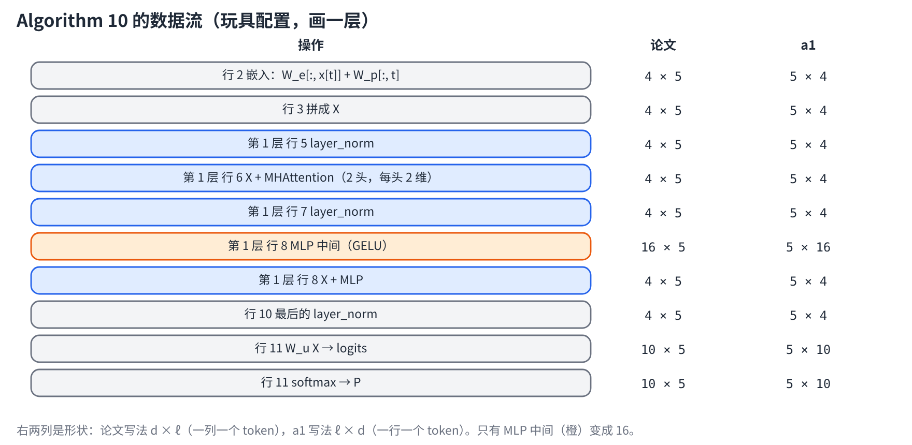
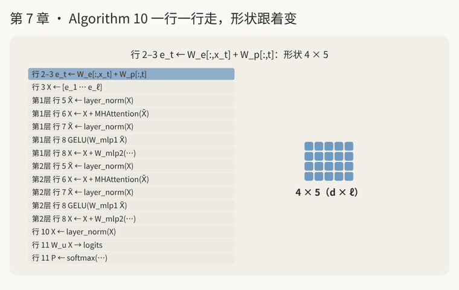

第 7 章 · 把 Transformer 写成伪代码：和前作章节、a1 的函数一一对上
本地运行
git clone https://github.com/wikieden/beyond-transformer
cd beyond-transformer/code/notebooks
pip install jupyterlab torch numpy
jupyter lab ch07_formal_algorithms.ipynb也可以下载后直接用 VS Code 打开 .ipynb 运行。需要 GPU 的章节在 Colab 里选「代码执行程序 → 更改运行时类型 → GPU」。
本章回答：前作 24 章把 Transformer 拆成了一个个零件，CS336 a1 要你一个个函数地实现它。有没有一份“说明书”，把整个模型写成几页严格的伪代码？Formal Algorithms 这篇论文的 Algorithm 1–14 分别对应什么？论文里一列是一个 token，a1 里一行是一个 token，形状怎么对？单个 query 的注意力一步步怎么算？
讲解日期：2026-11-25 · 上一章：第 6 章 attention 的起源 · 下一章：第 8 章 数 FLOPs
对应原文：Formal Algorithms for Transformerstransformer-deep-dive/materials/text/papers/formal-algorithms-transformers-2207.09238.txtAlgorithm 1–2 L248 起、Algorithm 3 L277–L300、Algorithm 4–5 L327–L360、Algorithm 6–7 L399–L420、Algorithm 10（DTransformer）L802–L838、Algorithm 13 / 14（DTraining / DInference）L854、L886；CS336 a1 handout §3 各题 L864–L1316
本章缩写：DTransformer = Decoder-only Transformer（只有解码器的 Transformer，GPT 那种）；EDTransformer = Encoder-Decoder Transformer（原版那种）；ETransformer = Encoder-only Transformer（BERT 那种）；d_e = embedding 维数（同前作的 \(d_{model}\)）；d_attn = 注意力里 q、k 的维数；d_mlp = MLP 中间层维数；N_V = 词表大小；ℓ = 序列长度（论文用 ℓ，a1 用 seq_len）；GELU = Gaussian Error Linear Unit（高斯误差线性单元，一种平滑的 ReLU）；W_u = unembedding 矩阵（把向量乘回词表的矩阵）。全部缩写见 附录 · 缩写与术语表
讲解
第一步：一份“说明书”：Algorithm 1–14（2026-11-25）
类比：拼乐高的说明书。 前作是一块块讲零件“为什么长这样”，a1 是让你自己把零件做出来。Formal Algorithms 这篇论文像说明书：每一步用了哪个零件、输入输出是什么形状、参数有哪些，全用严格的伪代码写清楚，不写一句代码，也不留模糊的地方。
| 算法 | 做什么 | 前作哪章 | a1 哪个题 |
|---|---|---|---|
| Algorithm 1 | Token embedding：按 token 编号查表取一列 | T22 | embedding |
| Algorithm 2 | Positional embedding：位置也查表（或 sin / cos） | T14–T16 | rope（a1 换成了 RoPE） |
| Algorithm 3 | 单 query 注意力：一个 token 看全部上下文 | T2–T9 | softmax、scaled_dot_product_attention |
| Algorithm 4 | 整段注意力 + Mask | T11、T12、T17 | scaled_dot_product_attention |
| Algorithm 5 | 多头注意力 | T13 | multihead_self_attention |
| Algorithm 6 | LayerNorm | T19 | rmsnorm（a1 换成了 RMSNorm） |
| Algorithm 7 | Unembedding：乘回词表 | T22 | transformer_lm 的输出层 |
| Algorithm 10 | DTransformer：GPT 式的整体前向 | T21、T24 | transformer_block、transformer_lm |
| Algorithm 13 | DTraining：交叉熵 + 梯度下降 | 本书第 1–4 章 | cross_entropy、adamw、training_together |
| Algorithm 14 | DInference：逐个采样生成 | T22 | decoding |
Algorithm 8、9 是原版的 encoder-decoder 和 BERT 式的 encoder-only，11、12、15 是它们对应的训练和推理。现在的大模型几乎都是 decoder-only（第 9 章讲原因），所以 a1 只要你做 Algorithm 10 这一条线。
一句话：Formal Algorithms 用 14 个伪代码算法写清了整个 Transformer，其中 Algorithm 1–7 是零件，10 是 GPT 式整体前向，13、14 是训练和生成，正好对上 a1 §3–§6 的各个题。
第二步：Algorithm 3：一个 query 怎么看全部上下文（2026-11-25）
Algorithm 3（L277–L300）把注意力写成最小的单位：只有一个当前 token e，看 T 个上下文 token \(e_t\)：
和第 6 章 Bahdanau 的式子一模一样的结构：打分、softmax、加权平均，只是打分换成了缩放点积，“原文笔记”换成了 \(v_t\)。
数字演示（d = 2，没有 bias；e = [1, 0]，上下文 [1, 0]、[0, 1]、[1, 1]；\(W_q\) = 2I，\(W_k\) = I，\(W_v\) = [[1, 0], [0, −1]]）：
| t | \(k_t\) | \(q^\top k_t/\sqrt2\) | α | \(v_t\) |
|---|---|---|---|---|
| 1 | [1, 0] | 1.4142 | 0.4458 | [1, 0] |
| 2 | [0, 1] | 0 | 0.1084 | [0, −1] |
| 3 | [1, 1] | 1.4142 | 0.4458 | [1, −1] |
q = [2, 0]；输出 \(\tilde v\) = 0.4458·[1, 0] + 0.1084·[0, −1] + 0.4458·[1, −1] = [0.8916, −0.5542]。
Algorithm 4 就是把 Algorithm 3 对所有 query 并排做，再加一个 Mask（因果时 query t 只能看 t′ ≤ t）；Algorithm 5 把它做 H 遍（每头一套 W）再拼起来乘 \(W_o\)。
一句话：Algorithm 3 是注意力的最小单位：一个 query 和所有 key 做缩放点积、softmax 成权重、加权平均 value；Algorithm 4、5 是把它并排做、加 mask、做多头。
第三步：Algorithm 10 每一行的形状：论文“列是 token”，a1“行是 token”（2026-11-25）
Algorithm 10（L802–L838）是 GPT 式模型的整体前向。用一个玩具配置（词表 10、2 层、2 头、d_e = 4、d_mlp = 16、序列 5）跟一遍形状：
| 行 | 做什么 | 论文的形状 | a1 的形状 |
|---|---|---|---|
| 2–3 | 查 token 表 + 位置表，拼成 X | 4 × 5 | 5 × 4 |
| 5 | layer_norm | 4 × 5 | 5 × 4 |
| 6 | X ← X + MHAttention（因果 mask） | 4 × 5 | 5 × 4 |
| 7 | layer_norm | 4 × 5 | 5 × 4 |
| 8 | MLP 中间（GELU） | 16 × 5 | 5 × 16 |
| 8 | X ← X + MLP | 4 × 5 | 5 × 4 |
| 4–9 | 上面 5–8 行再做一遍（第 2 层） | ||
| 10 | 最后的 layer_norm | 4 × 5 | 5 × 4 |
| 11 | P = softmax(W_u X) | 10 × 5 | 5 × 10 |
几个从伪代码里一眼就能看出的事实：
- 层 5、7 是“先 norm 再进子层”：Algorithm 10 写的是 Pre-LN（第 12 章细讲），和原版论文的 Post-LN 不同；最后还有一个 layer_norm（行 10）。
- 残差是“X ← X + …”：每层只往 X 上加东西，形状一直不变（第 10 章的残差流）。
- 整个模型里，只有 MLP 中间那一下维度变大（4 → 16），其余都是 d_e。
- 论文一列一个 token（\(X \in \mathbb{R}^{d_e\times\ell}\)，矩阵左乘：\(W X\)）；a1 和 PyTorch 一行一个 token（(batch, seq, d)，矩阵右乘：\(X W^\top\)）。同一个模型，所有形状都转置了一下。

图 7-1 · Algorithm 10 的数据流（玩具配置）。左边一列是伪代码行号，中间是每一步的操作，右边是论文写法的形状（d × ℓ）和 a1 写法的形状（ℓ × d）。蓝色是 L 层循环的一层，只有 MLP 中间（橙）维度变成 16一句话：Algorithm 10 是“查表 → L 层（Pre-LN 注意力 + Pre-LN MLP，都是残差加）→ 最后 norm → 乘回词表”；论文一列一个 token，a1 一行一个 token，形状互为转置。
第四步：读伪代码的习惯：先看形状和参数表（2026-11-25）
每个 Algorithm 开头都先写 Input、Output、Hyperparameters、Parameters，最后才是步骤。读的时候先看这四样：
- 输入输出的形状：比如 Algorithm 10 输入是 token 编号序列 x，输出是 \(P \in (0, 1)^{N_V\times\ell}\)，第 t 列是“看到前 t 个后，下一个词的分布”；
- 参数表：每层有哪些矩阵、什么形状，数一数就知道参数量（第 8 章）；
- 行号：每行一件事，和代码一一对应，写代码时把行号当注释，调试时一行一行对。
这篇论文也是 a1 的推荐阅读，做 T-M0（a1 §3 的模型前向）时可以对着 Algorithm 10 一行行写。
场景代码：把 Algorithm 10 的行号当注释写 PyTorch（真实库调用的写法；本书环境没装 torch，没跑过）：
def forward(self, x): # Algorithm 10
X = self.tok_emb(x) + self.pos_emb(torch.arange(x.size(1))) # 行 2–3（a1：形状 (B, ℓ, d_e)）
for blk in self.blocks: # 行 4
X = X + blk.attn(blk.ln1(X)) # 行 5–6：Pre-LN 注意力，因果 mask 在 attn 里
X = X + blk.mlp(blk.ln2(X)) # 行 7–8：Pre-LN MLP
return self.lm_head(self.ln_f(X)) # 行 10–11（a1 返回 logits，softmax 放进 loss）
一句话：读伪代码先看输入输出形状和参数表，再按行号一行行对代码。
动画演示：伪代码一行一行走，形状跟着变

可交互版：animations/07-formal-algorithms.html（▶ 播放 / → 单步；勾选框切换论文写法 / a1 写法的形状）。
怎么看：
- 左边是 Algorithm 10 的伪代码，当前行高亮（第三步）；
- 右边是 X 的形状，画成一个矩形：走到 MLP 中间那一行时变宽（16），其余时候都是 4；
- 勾上“a1 写法”：矩形横过来，一行一个 token。
练习与作答记录
题 1（第一、三步）：Algorithm 9 是 BERT 式的 encoder-only。它的注意力 Mask 应该是什么样？和 Algorithm 10 行 6 的 Mask[t, t′] = [[t ≤ t′]] 有什么不同，为什么？
题 2（第二步）：Algorithm 3 里，e = [0, 1]，其余和正文的例子一样。q、三个分数、α 和输出各是多少？（提示：\(e^{1.4142} \approx 4.113\)）
题 3（第三步）：配置改成 d_e = 8、d_mlp = 32、词表 50、序列 6。行 8 的 MLP 中间、行 11 的输出，论文写法和 a1 写法的形状各是什么？
口诀
十四个算法一本说明书：一到七是零件，十是 GPT，十三训练、十四生成。
单个 query 看上下文：缩放点积、softmax、加权 value。
并排做加 mask 是四，做多头是五。
先 norm 再子层，结果加回 X；只有 MLP 中间变宽。
论文一列一 token，a1 一行一 token，形状互为转置。
本章复习卡片
必背：B30–B31（B30 Algorithm 1–14 与 a1 各题的对应；B31 Algorithm 3 与 Algorithm 10 每一行的形状、论文与 a1 的转置关系）。练习做完后，按答错、卡住的地方再补。
附录 · 延伸阅读
留给以后深入学习用，不影响本章主线。★ 是建议先读的。
推荐阅读
| 读什么 | 读哪里 | 读它为了什么 |
|---|---|---|
| ★ Formal Algorithms for Transformers（Phuong & Hutter 2022） | Algorithm 1–7 L248–L420；Algorithm 10 L802–L838；Algorithm 13–14 L854–L900 | 整个 Transformer 的严格伪代码 |
| ★ CS336 a1 handout | §3 L864–L1316 | 每个零件对应的作业题 |
| 前作 第 21 章 拼装、第 24 章 总结 | 全部 | 零件怎么拼成一层、一个模型 |
| 本书 第 11 章 | 全部 | 原版 encoder-decoder 的真实源码 |
数学原理
- 列向量 vs 行向量：论文 y = Wx（W 是 d_out × d_in），a1 y = xWᵀ（x 是行向量，W 仍是 d_out × d_in）；两者是同一个线性映射。
- 注意力的置换性：去掉位置编码和 mask，Algorithm 4 对上下文 token 的顺序不敏感，所以需要 Algorithm 2。
- 残差保持形状：X ← X + f(X) 要求 f 的输出和 X 同形，所以子层的最后都要投影回 d_e。
公式清单
| 公式 | 意思 |
|---|---|
| \(e_t = W_e[:, x_t] + W_p[:, t]\) | Algorithm 10 行 2：嵌入 |
| \(\alpha_t = \text{softmax}_t(q^\top k_t/\sqrt{d_{attn}})\) | Algorithm 3：单 query 的权重 |
| \(\tilde v = \sum_t\alpha_t v_t\) | Algorithm 3：输出 |
| \(X \leftarrow X + \text{MHAttention}(\text{LN}(X))\) | Algorithm 10 行 5–6 |
| \(X \leftarrow X + W_2\,\text{GELU}(W_1\text{LN}(X) + b_1) + b_2\) | Algorithm 10 行 7–8 |
| \(P = \text{softmax}(W_u\,\text{LN}(X))\) | Algorithm 10 行 10–11 |
代码对照：把本章的数字用代码算一遍
NumPy。代码在仓库本地
beyond-transformer/solutions/chapter-code/ch07_formal_algorithms.py，配套测试tests/test_ch07.py，notebook 在notebooks/ch07_formal_algorithms.ipynb：
bash cd beyond-transformer/solutions/chapter-code uv run python ch07_formal_algorithms.py uv run pytest tests/test_ch07.py
讲义 ↔ 代码：
| 讲义 | 公式 | 写法 | 跑出来 |
|---|---|---|---|
| 第一步 对照表 | — | MAP |
10 行 |
| 第二步 Algorithm 3 | 缩放点积 + softmax | single_query(e, ctx, ...) |
α = [0.4458, 0.1084, 0.4458]，输出 [0.8916, −0.5542] |
| 第三步 Algorithm 10 的形状 | — | shape_trace() |
论文 (4, 5)、a1 (5, 4)；输出 (10, 5) / (5, 10) |
关键几行：
q = wq @ e # 论文写法：列向量，左乘
k = ctx @ wk.T # 上下文是一行一个 token：右乘 Wᵀ
s = k @ q / np.sqrt(len(q)) # 每个上下文 token 一个分数
out = softmax(s) @ (ctx @ wv.T) # 加权平均 value
代码里才看得到的 2 件事：
- 同一个函数里两种写法都出现了：q 用列向量左乘，k、v 因为上下文按行存，用右乘 Wᵀ。写 a1 时统一成“一行一个 token、右乘 Wᵀ”最不容易错。
- 这里只跟踪形状、算一个单 query 的例子：a1 §3 的完整前向（带参数、能过测试）留给里程碑 T-M0。
自己改一改（不影响练习答案）：
- 把
single_query的 \(W_q\) 改成 5I，α 怎么变？（分数放大，softmax 更尖） - 给
shape_trace传 L = 4，表多出几行？